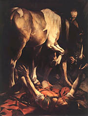

Desnudos los muertos habrán de ser uno
con el hombre en el viento y la luna poniente;
cuando sus huesos queden limpios, y limpios los huesos pasen,
tendrán ellos estrellas a sus codos y a sus pies;
y aunque se vuelvan locos, serán cuerdos,
aunque se hundan en el mar emergerán de nuevo,
aunque los amantes se pierdan, no se perderá el amor;
y la muerte no tendrá dominio.
Y la muerte no tendrá dominio.
Bajo las ondas del mar
los que yacen tendidos no morirán al viento;
retorcidos de angustia cuando los nervios cedan,
aún atados a una rueda, no serán despedazados
la fe en sus manos se partirá en dos,
y los males unicornes habrán de atravesarlos;
rotos todos los cabos ya no crujirán;
y la muerte no tendrá dominio.
Y la muerte no tendrá dominio.
En sus oídos las gaviotas no gritarán acaso más
ni romperán las olas sonoras en las playas;
dondé brotó una flor, tal vez nunca otra flor
levante su cabeza a los embates de la lluvia;
y aunque ellos estén locos y muertos como clavos,
sus cabezas habrán de amartillar margaritas;
estallarán al sol hasta que el sol estalle,
y la muerte no tendrá dominio.
Dylan Thomas
Original -en inglés- acá; mucho más musical, claro está; casi sin palabras de más de dos sílabas; y con audio (en WAV).
En modo geek: estaba leyendo esta nota de Slashdot: dicen los científicos de no sé donde haber encontrado que el 98% de las consultas de DNS a los servidores del nivel más alto ("root servers") son innecesarias ... (es cosa demasiado técnica para explicar, pero... cada vez que uno, navegando en Internet necesita obtener la dirección IP de una página web -digamos hjg.com.ar se establece una de consultas jerárquicas que empiezan en unos servers "root" super genéricos, que "saben" que todas las direcciones que terminan en .ar las "conoce" tal server de argentina y le pasa la pelota a éste; éste después le pasa la pelota al que "conoce" las com.ar y así...).
En las discusiones, dentro de los siempre presentes aportes humorísticos, alguien trae esta "información" relacionada:
-
«Científicos del Centro de Oraciones del Vaticano
han encontrado que el 98% de las oraciones dirigidas
al nivel de Dios son innecesarias».
En este sentido, ninguna oración de petición es innecesaria... mientras sea en verdad oración, dirigida en verdad a Dios.
Pero... on the other hand ... debe haber tantas
"oraciones" pidiendo estupideces y vanidades ( y acaso
dirigidas a un ídolo al que se le pone el nombre de Dios...).
Me recuerda ese cuento de Baudelaire, "El jugador generoso".
Me lo anoto para comentar en estos días.
Y para no abandonar del todo el modo geek, vaya un par de otras notas de Slashdot que me interesaron: The Future of Java?, DTD vs. XML Schema ... BTW: hoy estamos pasando una tormenta en Internet por un gusano que hizo un desastre en la red...
Hoy el santoral recuerda un hecho, más que una persona: la Conversión de San Pablo, en el camino de Damasco (ha quedado como expresión proverbial: la ocasión para convertirse). Hay dos relatos en la Biblia -en los Hechos de los Apóstoles-; en la misa de hoy se lee el que hace el mismo San Pablo, ante los judíos (Hechos 22) :
-
...
3. Yo soy judío, nacido en Tarso de Cilicia, pero educado en esta ciudad, instruido a los pies de Gamaliel en la exacta observancia de la Ley de nuestros padres; estaba lleno de celo por Dios, como lo estáis todos vosotros el día de hoy.
 4. Yo perseguí a muerte a este Camino, encadenando y metiendo en la cárcel a hombres y mujeres,
5. como puede atestiguarlo el Sumo Sacerdote y todo el Consejo de Ancianos. De ellos recibí también cartas para los hermanos de Damasco y me puse en camino con intención de traer también encadenados a Jerusalén a todos los cristianos que allí había, para que fueran castigados.
6. Pero yendo de camino, estando ya cerca de Damasco, hacia el mediodía, me envolvió de repente una gran luz venida del cielo;
7. caí al suelo y oí una voz que me decía: «Saulo, Saulo, ¿por qué me persigues?»
8. Yo respondí: «¿Quién eres, Señor?» Y él a mí: «Yo soy Jesús de Nazareth, a quien tú persigues».
9. Los que estaban vieron la luz, pero no oyeron la voz del que me hablaba.
10. Yo dije: «¿Qué he de hacer, Señor?» Y el Señor me respondió: «Levántate y vete a Damasco; allí se te dirá todo lo que está establecido que hagas.»
11. Como yo no veía, a causa del resplandor de aquella luz, conducido de la mano llegué a Damasco...
Qué envidia... en un mundo tan ayuno de sabios, cuánto daría uno
por poder preguntar :
«Qué he hacer con mi vida ? Qué quiere Dios de mí ?»
y poder confiar en la respuesta...
No es justo, tienta a decir... San Pablo la tuvo fácil:
si yo pudiera preguntarle al mismísmo Jesús "Qué tengo que
hacer?" ... qué mérito tiene su conversión; así, cualquiera...
Pero:
Tal vez lo que Simone Weil llamaba la obediencia implícita a Dios, expresada en la aceptación cósmica, el amar el mundo y todo lo que sucede, en cuanto expresión de la voluntad de Dios.
Lo que Kierkegaard refería al papel de los lirios del campo y las aves del cielo, como nuestros verdaderos maestros.
Lo que Pascal dice
-
Si Dios nos diese por su propia mano maestros,
¡oh, cómo habría que obedecerles de todo corazón!
La necesidad y los acontecimientos lo son, infaliblemente.
PD: La imagen es una pintura de Caravaggio; la composición de la escena no es muy convencional, y ni siquiera estoy seguro de que me guste... pero tiene lo suyo, creo.
-
«La única apología del Cristianismo verdaderamente
eficaz se reduce a dos elementos: los santos que
ha producido la Iglesia, y la belleza que ha albergado
en su seno. Damos mejor testimonio del Señor
con el esplendor de la santidad y con el arte que
ha producido la comunidad de creyentes,
que con tantos argumentos ingeniosos
que los apologistas han urdido
para justificar las zonas oscuras,
tan frecuentes -lamentablemente- en la historia
humana de la Iglesia.
Y si la Iglesia debe continuar transformando y humanizando el mundo; ¿cómo puede renunciar a la belleza en su liturgia, esa belleza que van tan unida al amor y a la júbilo de la Resurrección ? No; los cristianos no debemos conformarnos con poco. Debemos hacer de la Iglesia un sitio donde la belleza -y por lo tanto, la verdad- se encuentran en su propia casa. Sin esto, el mundo pasaría a ser como el primer círculo del infierno.»
Joseph Ratzinger
Vía Gerard (soy muy renuente a citar -y encima retraducir- textos de los que no tengo la cita para verificar; pero por esta vez...)
-
El vulgo juzga bien de las cosas porque se halla en la ignorancia natural, que es la verdadera sede del hombre. Las ciencias tienen dos extremos que se tocan. El primero es la pura ignorancia natural en que se encuentran todos los hombres al nacer. El otro, aquel a que llegan las almas grandes que, habiendo recorrido todo lo que los hombres pueden saber, encuentran que no saben nada, y se encuentran en esa misma ignorancia de donde partieron; pero es una docta ignorancia que se conoce a sí misma. Aquellos que han salido de la ignorancia natural y no han podido llegar a la otra, tienen cierto barniz de esta ciencia suficiente y se hacen los entendidos. Perturban el mundo y juzgan mal de todo. El pueblo y los hábiles componen el tren del mundo; aquéllos lo desprecian y son despreciados. Juzgan mal de todo y el mundo juzga bien de ellos.
...
Gradación. El pueblo honra a las personas de alta prosapia. Los medio-inteligentes las desprecian, diciendo que el nacimiento no es una cualidad de la persona, sino del azar. Los más inteligentes las honran, no por el pensamiento del pueblo, sino con segunda intención. Los devotos que tienen más celo que ciencia las desprecian a pesar de esta consideración que les hace ser honrados por los hábiles, porque juzgan de ello por una nueva luz que su piedad les otorga. Pero los cristianos perfectos les honran por una luz superior. Así se ve que las opiniones se suceden del pro al contra, según la luz que se tenga.
Pascal, Pensamientos
Por ejemplo (forzando la imagen): supongamos uno que sube por una gran escalera en caracol. En la coordenada altura , el movimiento es uniforme; y si el valor supremo de esa persona es la altura, puede decirse que progresa; pero si lo que en realidad importa es estar -digamos- lo más al sur posible... no.
Y viceversa: en un mundo donde lo único importa es estar al sur, la persona que empieza el ascenso helicoidal es criticada ("se está alejando del sur"); recién cuando da una vuelta completa a la hélice, los bienpensantes se felicitan "al fin ha vuelto con nosotros"; pero quién sabe... Todo depende de cuál coordenada es la importante.
Esto también puede servir -mal- para disolver algunas aporías.
Sin ir más lejos, a la socióloga que nos exhorta a «liberarnos de los patrones valorativos del orden social» uno podría -si tuviera tiempo que perder- objetar...
-
- Pero... acaso el oponerse a los valores de la sociedad, libera ?
Por ejemplo: en la sociedad actual el uso del preservativo
es alentado como algo éticamente irreprochable, y aún obligatorio
la mayoría de las veces
(por una obligación social, para evitar contagios y embarazos indeseados),
y hasta es puesto como una señal de amor. Los únicos
-despreciables- que objetan eso son los católicos. ¿No es, según esas
normas, elogiable oponerse a ese "patrón valorativo ?
¿ Sería liberador salir a decir todo lo que dice la Iglesia
a favor del sexo como expresión reservada y exclusiva del amor
conyugal ?
- Nooo ... ! De ningunísima manera. No basta con oponerse a lo que dice la mayoría; a veces, la mayoría tiene razón.
- Pero cómo podemos hablar de "tener razón" ? Acaso existe una verdad absoluta ? Qué quiere decir "tener razón?
- Bueno, bueno... eso queda para otro momento. Vos podés pensar lo que quieras, está claro. Pero lo que yo (y todos mis compañeros, profesores y alumnos de sociología) creemos es que, definitivamente, eso no tiene nada de liberador ni de meritorio.
- Sin embargo, ciertamente se opone "a los valores del orden social".
- Pero no basta con eso. Por seguir tu ejemplo: oponerse al preservativo, al sexo como simple práctica de placer, etc, sería oponerse a los valores de esta sociedad, sí (hasta cierto punto) ... pero para caer en los valores de otra sociedad ya perimida; y rebelarse contra el hoy en nombre del ayer no es liberador ni nada que se le parezca; lo liberador es rebelarse contra lo actual, pero avanzando, nunca retrocediendo.
- Bueno... eso al menos tiene su coherencia.... Pero sigue habiendo una aporía...
- Cual ?
- Bueno ... decís que lo liberador es romper con la sociedad para "caminar hacia adelante" ... pero no veo cómo : si justamente, (casi) todos concuerdan en eso, (casi) todos están caminando hacia allá; así que, avanzar implicaría justamente "seguir a la manada", quedarme pegado a los "valores del grupo social". El camino hacia allá está demasiado transitado como para buscar la independencia por ahí.... Es un círculo vicioso! (o una recta)
- No. Pongamos que todos caminan "hacia allá"; pongamos que tu consigna es caminar también en esa dirección, (ya que, sin dudas, la salvación está e "avanzar") pero además tenés que "individualizarte", alejarte de la manada, como decís...
- ¿Puede hacerse? ¿Cómo?
- Pero hombre... es muy fácil ! Caminá más rápido !! Corré!!! ... Y hasta es posible que, en esa carrera, reencuentres posiciones de los reaccionarios (por ejemplo: despreciar al preservativo, como cosa contraria al amor); pero no es para preocuparse, porque la coincidencia es aparente: en la coordenada que importa, dichosamente están en las antípodas.
- Me suena un poco fantástico...
- Sí?
A propósito -o no-: hoy es el la fiesta de San Francisco de Sales. No es santo de mi devoción, (en el sentido literal de la expresión); no porque tenga nada en contra, es que no lo he llegado a conocer. Y su suavidad francesa no me lo hace muy atractivo (pero quién sabe... dicen que tuvo que forzar su naturaleza para hacerse así...).
Igual, acaso no venga mal recordar esta frase suya:
-
"Si me equivoco, prefiero equivocarme más bien por demasiada bondad que por demasiado rigor. "
Esta pequeña anécdota de Mark Shea (y el Oligarca) sobre traducciones de jergas protestantes/católicas, tiene gracia.
De paso (saquemos el cuero, total nadie nos ve,
y los que no ven vía Babelfish no entienden nada):
el weblog de Mark Shea
es uno de los más prestigiosos de los católicos yanquis; y lo merece.
El tipo es
uno de esos conversos, escritor y apologista de buena
calidad, de esa camada católica (levemente "conservadora")
anglosajanona (hijos de Lewis, nietos de Chesterton, primos
de Peter Kreeft, etc). Acá hay
escritos.
El weblog tiene algo de esos defectos que tiene
-a mis ojos, claro está- la derecha católica yanqui,
pero que en este caso aparecen bien matizados,
con sentido del humor y esfuerzos para zafar
de la autoindulgencia, y patriotismos carnales
(patriotismos que incluyen a EEUU, al partido republicano,
a Bush ... y a la Iglesia católica).
En varios de los últimos posts sobre la guerra , y sobre
"los conservadores", es visible ese esfuerzo para
no caerse del caballo de la ortodoxia (en el sentido
chestertoniano).
Esto, que desde acá afuera parece tan evidente,
desde allá adentro es díficil verlo .. y más difícil verlo siempre:
-
... Chesterton comentaba que los progresistas eran los encargados
de inventar nuevos errores, y los conservadores los encargados
de impedir que esos errores sean arreglados.
Esto resume la vida política aquí fuera
del Edén. ...
No hay nada humano, aparte de Cristo,
que no pertenezca al mundo caído -también los conservadores.
El conservadurismo, separado de Cristo,
se pone por encima de Dios; igual que el liberalismo.
No puede salvar y puede, en verdad, crear
sus propios infiernos, tal como puede hacerlo el liberalismo.
La única esperanza es la fe viva en Jesucristo, no en nuestras
ideologías, rebajadas y humanas, que tratan continuamente
de constituirse en sus sustitutos.
Amén. Hay que decir que, dichos como estos, no son frecuentes
-ni en las bocas ni en los corazones- de por allá.
Y no me importa mucho la precisión de las denominaciones;
me importa el espíritu del asunto...
Sin embargo, toda ese esfuerzo para mantener la lucidez
contra las pasiones, no le basta para reconocer que
el Papa y Ratzinger -por poner dos ejemplos-
"se oponen a la guerra":
-
I am not one of the conservative Catholics who finds it so easy to dismiss Ratzinger or the Holy Father with a snort of contempt. Their reluctance (I would not call it opposition since they have not flat said, "An attack on Iraq is immoral and incompatible with Catholic teaching" (nor will they)) makes me uneasy. At the same, the blithering idiocy of the people in this country and Europe who oppose war gives me no substance to go on. So far, all the Pope has done (from what I can see) is reiterate Just War Principles. The press has taken that as a "statement of opposition" but I can't really see that it is (though I've little doubt he's not thrilled with the upcoming war).
Notable -y levemente desalentador... pero no mucho.
Como él mismo recuerda, este es un mundo caído;
y no tenemos derecho a "desilusionarnos" al
no encontrar "pureza" donde no tenemos
derecho a buscarla (ni en los weblogs católicos;
ni en los intelectuales; ni en la iglesia; ni en nuestras
pasiones - algún día tenemos
que hablar de los cátaros y esas busquedas
desesperadas de pureza).
Veo, pues, con cierta simpatía esas
pequeñas caídas, porque (descontando
el margen de error en mi propio juicio)
son parte de la buena lucha; lo que importa
es resistir al mal, reconociendo -dolorosamente-
que no podemos contra él (como Frodo, más o menos).
No puedo decir lo mismo
de muchas otras que veo por ahí (me tienta hacer una selección... tal vez...)
[*] (tener en cuenta, los lectores argentinos, que allá los "liberales" son la izquierda, al revés del lenguaje político de acá)
Yo tengo mi buena componente geek, qué vamos a hacerle....
Vergonzante ? No del todo. Pero no muy conformista (parte de mi exagerada e irremediable tendencia a llevar la contra a todo pensamiento grupal).
Y -sobre todo- con aficiones no muy compartidas en lo estético extra-tecnológico : literatura, sobre todo; ni me apasionan los juegos (con el "Príncipe de Persia" tuve suficiente); ni me gusta StarTrek, ni anime, ni ...
Igual, el ambiente geek es un poco más variado -en lo estético, ideológico, intelectual- que otros ... (
Acá hay una imagen que ilustra una jerarquía (compleja y levemente aterradora) de geeks, según esas categorías estéticas.
{kind=link}
Vía Video meliora....
Surprise. Parece, según mi registro de visitas, que este blog había entrado en la primera ronda de nominados de un concurso de weblogs (?).
Bueno.
Muchas -y sinceras- gracias a los que cometieron
la amable extravagancia de votarme... Suerte (o lástima)
que no entré en la final: tendría que haberme dedicado
a poner un bannercito exhortando a que no me voten...
o renunciar (ambas vanidades; como ésta).
Pero, de verdad: tipos que, al armar las categorías
para premiar weblogs, dedican una a los weblogs
glbt (gay/lesbian/bisexual/ transgendered community)
pueden meterse el premio o nominación precisamente ahí.
Me corrijo: peor que decir una gansada, y peor que decirla con énfasis, es además decirla en lenguaje pedante:
- La Ley de Unión Civil en la Ciudad
de Buenos Aires favorecerá también a las parejas heterosexuales que deseen establecer relaciones familiares basadas en un consenso mutuo,
independiente de los patrones valorativos del orden social. Un proceso de individuación con el que se adquiere libertad.
Y que, además, consumen obedientemente el material ideológico de "las sociedades avanzadas de Europa y América del Norte", a las cuales tenemos, inexorablemente que parecernos... si somos progresistas (si queremos avanzar).
Y que, además, (y con su discurso anti-discriminación reinivindicatorio de los diferentes) copan con una asfixiante uniformidad todos los espacios culturales de los medios masivos.
Individualismo y liberalismo. Hijos de capitalistas que juegan a revolucionarios, mientras buscan su confort (material e intelectual).
Nada nuevo -ninguna basura nueva- bajo el sol.
A propósito de la fecha (de ayer) Karen recuerda -y cita parte de- la Didajé (o Didaché) o "Doctrina de los Doce Apóstoles". Fue uno de esos escritos de los primeros tiempos del cristianismo, muy reverenciados en la antiguedad, pero sólo conocido por referencias (del siglo II) ... hasta que en 1870 un tipo encontró el texto en un códice de Constantinopla (esos son descubrimientos!).
Se trata de un escrito de tipo catequístico, más moral que doctrinal. Según los que saben, fue escrito alrededor del año 90 o 100; más o menos contemporáneo del evangelio de San Juan, entonces, y uno de los textos más antiguos del cristianismo. Parece que tuvo tanta autoridad en su tiempo que -cuenta Eusebio- algunos la consideraban como parte de las Escrituras.
Y acá puse La Didaché completa, en formato PDF (para imprimir), sin notas.
Karen la trajo a colación porque -cosa notable- este pequeño y venerable manual de catequesis del siglo I contiene una prohibición expresa contra el aborto (y el infanticidio, y la corrupción de menores...)
- ...
No matarás. No cometerás adulterio. No corromperás a los jóvenes. No fornicarás. No hurtarás. No harás brujerías. No prepararás venenos. No cometerás aborto ni infanticidio. No codiciarás los bienes de tu prójimo.
No perjurarás. No darás testimonio falso. No hablarás mal (de tu prójimo). No serás vengativo.
No serás doble ni bilingüe. Pues, trampa de la muerte es la doblez.
Tu palabra no será mentirosa ni vacía, mas llena de obra.
No serás avaro, ni rapaz, ni hipócrita, ni malicioso, ni soberbio. No tramarás tretas contra tu prójimo.
No odiarás a nadie; sino que reprenderás a unos, tendrás compasión de otros; por otros rogarás, y a otros amarás más que a tu propia alma. ...
- ...
¡Velad por vuestra vida! Que vuestras linternas no estén extinguidas ni desceñidos vuestros lomos; mas estad alerta, porque no sabéis la hora en que el Señor va á venir.
Reuníos con frecuencia, solícitos de lo que aprovecha a vuestras almas. Pues no os aprovechará todo el tiempo que vivisteis en la fe, si no estáis perfectos en el último tiempo.
Porque en los últimos días se multiplicarán los falsos profetas y los corruptores, y se convertirán las ovejas en lobos, y el amor se convertirá en odio.
Porque, mientras que la iniquidad se acrecentará, se odiarán unos a otros, se perseguirán y entregarán: y entonces aparecerá el impostor del mundo como hijo de Dios, y hará señales y prodigios. Y la tierra será entregada en sus manos. Y cometerá iniquidades como jamás se hizo en el decurso de los siglos.
Entonces vendrá el Juicio de los hombres en el fuego de la prueba. Y muchos se escandalizarán y perecerán. Pero los que perseveraren en su fe, se salvarán de la misma condenación.
Y luego aparecerán las señales de la verdad: primero la señal de la revelación en el cielo, después la señal de la voz de trompeta, y finalmente, la resurrección de los muertos.
Pero no de todos, sino según fue dicho: "Vendrá el Señor, y todos los santos con El"
Entonces el mundo verá al Señor, viniendo sobre las nubes del Cielo.
Lindo lo de Disputations, comentando una explicación del cura Jim sobre el uso del corporal en la Misa.
El corporal sería una especie de mantelito pequeño que se pone sobre el altar y sobre el cual se colocan la patena con la hostia y el cáliz con el vino, antes (y después) de la Consagración. Parece ser (yo no sabía, soy muy ignorante en cuestiones litúrgicas) que uno de los sentidos de su uso es marcar un límite: salvo intención contraria, el sacerdote consagra los elementos (pan y vino) que se encuentran sobre el corporal; así, si por ejemplo hay otras hostias en el altar o en las cercanías, se asume que éstas no son convertidas en cuerpo y sangre de Jesús.
Interesante.
A mí no se me había ocurrido
pensar en esa cuestión
de la delimitación del sacramento...
A John sí ... concretamente: ¿la consagración
no podría extenderse
a las galletitas/copos de cereal que algún
niño está comiendo, allá en el fondo de la iglesia?
(!!!)
Y él se había armado la teoría de que esas
reglas estrictas que determinan la composición
de la hostia a consagrar estaban destinadas
a evitar esas -digamos- consagraciones
involuntarias.
Leyendo ahora la explicación de Jim del corporal, parece que
la teoría de John, sin dejar de ser perfecta, tiene
el inconveniente de estar en contradicción con los hechos.
Bueno... No me acuerdo quién fue el que dijo
-es de esas frases de atribución variada ... creo que la leí
adjudicada a Lenin- lo de
«Si los hechos no se corresponden con mi teoría,
peor para los hechos».
Pero, si uno puede
esperar eso de un político, de un intelectual ideologizado,
(y de algún científico moderno...), uno mantiene la ilusión
de que un dominico jamás lo va a decir...
Sin ir más lejos (no, no, no; no voy a mentar a Perón; de ninguna
manera) .... estábamos hablando de especies eucarísticas
y de dominicos...
me recuerda esto:
Como cualquiera que la haya hojeado sabe, esa
maravilla que es la Suma de Santo Tomás está armada en base
a cuestiones;
cada cuestión se presenta como una pregunta
(generalmente a responder por sí o por no).
Antes de la respuesta vienen varias
-normalmente tres- objeciones
(Videtur.... / Pacerería que... ); pueden ser
argumentos filosóficos, teológicos,
citas bíblicas o de padres de la iglesia, o bien
hechos de la experiencia, que se oponen a la respuesta
que viene. Luego una sola contra-objeción
(Sed-contra ... ; Por el contrario... )
a favor de la tesis.
Luego la respuesta (Respondeo dicendum quod...)
a la pregunta con su desarrollo. Y finalmente
la respuesta a cada objeción (Ad primum....).
En
este artículo Santo Tomás plantea la cuestión
"¿Pueden corromperse las especies consagradas?".
Las tres objeciones son en este caso
razonamientos filosóficos-teológicos (el dogma de la
Transustanciación tiene mucha miga intelectual)
y apoyan la respuesta negativa. Pero Santo Tomás
está por la afirmativa. Más allá de la respuesta a
la cuestión -y a las objeciones- me encantó leer
la contra-objeción que pone: contra todas
las imponentes objeciones filosóficas ,
un solo y simplísimo hecho: «Percibimos
con nuestros sentidos que las especies consagradas
se corrompen y se pudren».
Cuando leí esto -en su contexto ... y en el mío-
me dije: «Este Tomás... es un capo».
Y si alguien
me objeta que es una estupidez juzgarlo -bien o mal-
por esa trivialidad... le diré que a esa
objeción la doy por buena.
"Abortion kills."
Se cumplen hoy 30 años del famoso fallo judicial
que legalizó el aborto en EEUU.
Desde entonces, y con el aplauso y el aliento de ya sabemos quiénes,
millones de mujeres han ejercido
su derecho a elegir; y eligieron deshacerse de unos
cuarenta millones de chicos que molestaban.
Por los frutos conocemos el árbol.
En el weblog de Amy Welborn
de hoy hay varios posts y links.
-
... por más que veo al hombre aplastado,
asfixiado, empequeñecido por la
«civilización industrial», no puedo creer
que degenerará, que se marchitará moralmente
para morir al fin completamente esterilizado.
Tengo una confianza sin límites en la fuerza creadora del espíritu. Tengo la impresión de que el hombre logrará -si quiere- permanecer libre y creador en cualquier circunstancia, cósmica o histórica.
Pero ¿cómo puede producirse este milagro?
¿Cómo se redescubrirá
la dimensión sacramental de la existencia?
Hoy lo que se puede decir es : todas
las cosas que han existido no las
hemos perdido del todo ; las reencontramos
en nuestros sueños y en nuestras nostalgias.
Y los poetas las han conservado.
No digo nada de la vida religiosa, porque
la autenticidad y la profundidad de
la vida religiosa de mis contemporáneos
me parece uno de los problemas más
misteriosos....
Alguna salida debe existir. Aldous Huxley propone la mescalina, el alcohol, las drogas... Habría mucho que decir sobre eso.
Mircea Eliade
Diario , 25/11/1959
No es del todo recomendable eso de preguntarle a un chico/a de -digamos- cinco años "Vos tenés novia/o?" ...
Por qué ? ...
Pues porque eso sería presuponer una orientación heterosexual.
Así, al menos, nos informa una intelectual católica, que escribió libros y da clases en una Facultad de Teología del norte.
No sólo eso: es una monja; aunque no parezca... (ni quiera parecerlo, evidentemente).
Por cierto: desconfiar de una monja porque no quiera
vestirse de monja, es un prejuicio (reaccionario).
Desconfiar porque, además, a cada rato nos habla
de "dualismos" que tenemos que superar ... también.
Desconfiar porque, además, parece considerar a casi toda
la doctrina católica previa al Concilio Vaticano II como
una serie de errores, y al mismo CVII como un preludio a cosas
(ay, todavía!) incumplidas... también es un prejuicio.
Pero, ya se sabe:
la propia salud espiritual requiere un discreto ejercicio del prejuicio.
(y hay un tiempo para todo, decía el rey Salomón; también
para cortar cabezas progres ... tal vez).
(Link vía Amy)
A veces pasa que una sociedad se divide en dos bandos por su diferencia de criterio (generalmente, una valoración ética) sobre alguna cuestión candente.
A veces, esa división atraviesa por el medio a las
"mini-sociedades" (barrios, familias, grupos de amigos,
mini-entornos sociales), y la diferencia de criterio resulta
independiente de (no está correlacionada con)
esas subdivisiones naturales.
Otras veces, en cambio,
se ven franjas que opinan básicamente lo mismo
sobre el punto en disputa.
A veces esta división se da por el lado intelectual: y la mayoría de los intelectuales (usada la palabra en su sentido más amplio y más impropio) están de un lado, y la mayoría de los tontos del otro.
En estos casos, las razones que esgrimen los inteligentes serán sin duda mejores -y por lo tanto más válidas- que las de los tontos.
Y sin embargo, no es raro, en estos casos, que sean los tontos los que tienen razón (aunque no sea por sus razones).
Simone Weil decía algo así («a veces son los imbéciles los que tienen razón») a propósito de una especie de polémica, en la Francia de comienzos del s. XX, acerca de la "imputabilidad moral del artista"... pero eso es sólo un ejemplo.
Un post muy recomendable en Disputations sobre la posición católica (por llamarla de alguna manera) respecto de la probable guerra EEUU/Irak ; ver también los comentarios con una discusión interesante con the Kairos Guy.
A propósito (y a pesar) de lo último dicho, busqué el texto de Pascal ("El misterio de Jesús", uno de sus "Pensamientos) en la web; y casi no se lo encuentra.
Es una lástima. Tendrá sus cosas objetables, peligrosas, y todo lo que quiera, pero también tiene su fuerza y su valor ... (así al menos lo creo , y -creo- también lo creen gente como Peter Kreeft ... y Juan Pablo II). Además de que me fue de ayuda en mis tiempos oscuros (gracias a la recomendación de Unamuno, cuándo no).
Así que lo metí acá.
Hoy se leyó en misa este texto de la carta de San Pablo a los Corintios:
-
La comida para el vientre y el vientre para la comida. Mas lo uno y lo otro destruirá Dios. Pero el cuerpo no es para la fornicación, sino para el Señor, y el Señor para el cuerpo.
Y Dios, que resucitó al Señor, nos resucitará también a nosotros mediante su poder.
¿No sabéis que vuestros cuerpos son miembros de Cristo? Y ¿había de tomar yo los miembros de Cristo para hacerlos miembros de prostituta? ¡De ningún modo!
¿O no sabéis que quien se une a la prostituta se hace un solo cuerpo con ella? Pues está dicho: Los dos se harán una sola carne.
Mas el que se une al Señor, se hace un solo espíritu con él.
¡Huid de la fornicación! Todo pecado que comete el hombre queda fuera de su cuerpo; mas el que fornica, peca contra su propio cuerpo.
¿O no sabéis que vuestro cuerpo es santuario del Espíritu Santo, que está en vosotros y habéis recibido de Dios, y que no os pertenecéis?
¡Habéis sido comprados a alto precio! Glorificad, por tanto, a Dios en vuestro cuerpo.
Y la imagen que usa Pablo para ilustrar la Redención, la de la "compra" -en analogía a la compra del esclavo- nos mete en el tema de la expiación (atonement) que llevó a cabo Jesús por su Encarnación y su Pasión en la cruz, y que han estado discutiendo en los blogs yanquis estos días. Después veré de meter la cuchara (o la pata) en esto... La cosa no es nada clara -si lo fuera, sería una fábula- y todas las imágenes que intentan "explicar" el asunto deben ser tomadas con pinzas. En este ejemplo, Ratzinger advierte contra un error común: suponer que la imagen de la "compra" se refiere a un precio (sangriento) que paga Dios para comprarnos a nuestro "amo" (el Diablo) que nos tiene en esclavitud; no es así la cosa.
Después seguimos...
PD: Tras leer algo que Mauriac escribe sobre Fedra de Racine: "... y sin duda el Redentor no ha venido todavía; ninguna gota de sangre ha sido derramada por Fedra", Mircea Eliade anota en su Diario:
«Esta concepción farmacéutica de "la gota de sangre" que el Redentor habría derramado por cada uno me resulta intolerable ... es una imagen chasqueante, profana, que no sólo disipa el misterio de la redención sino que lo minimiza.»
Tendrá razón ? Creo que es probable... a pesar de Pascal...